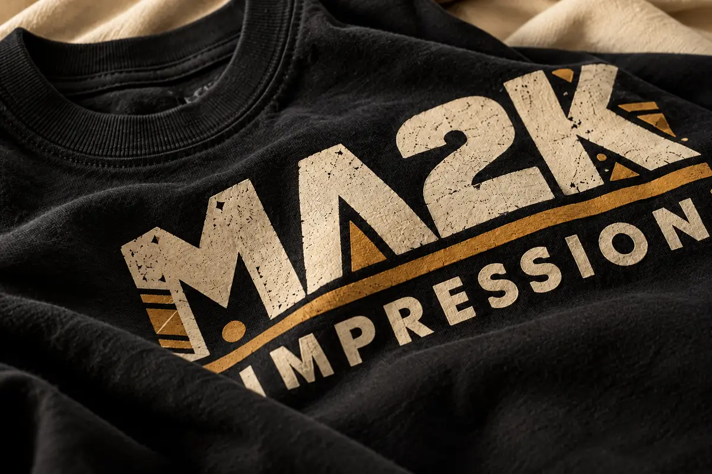

01 / Screen printing
Ink with presence.
Screen printing gives a design weight, clarity and a familiar hand. It is the studio choice for graphics that need to read from across the room and still feel good up close.

The method
Make the graphic feel as strong as the idea.
Our screen printing service is built for artwork with a point of view: bold type, illustrated marks, tonal graphics and coordinated apparel that needs consistent color across a run. We help you think through the blank, ink count, placement and finish before anything hits the press.
Best for
- Brand and merch collections
- Teams, clubs and community events
- Bold one-color or multi-color artwork
- Repeatable larger apparel runs
Think about
- Garment color and ink contrast
- Print placement and scale
- Number of colors in the artwork
- Quantity and target date
The screen print feeling
Classic for a reason.
When the artwork is right and the ink is dialed in, the finished piece feels immediate, durable and unmistakably yours.
Art direction
We review the artwork and help translate it into a print-ready setup.
Color planning
We think through ink color, garment color and the contrast the design needs.
Placement
Front, back, sleeve or pocket. Scale and location shape the whole garment.
Production
Your approved details move into a considered, repeatable apparel run.
Ready for ink
Bring us the artwork. We will help it land.
Tell us what you are making, who it is for and when it needs to be ready.